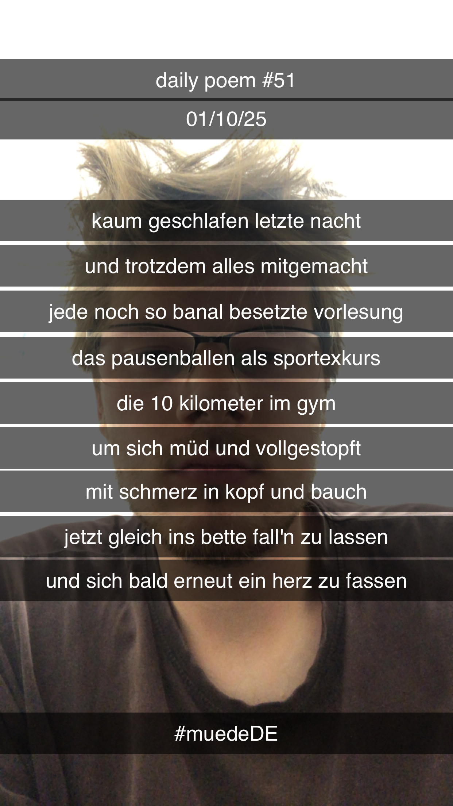

Ein starker Tag im Leben eines Studenten
[51]Kaum geschlafen letzte Nacht,
Und trotzdem alles mitgemacht –
Jede noch so banal besetzte Vorlesung,
Das Pausen-Ballen als Sportexkurs,
Die 10 Kilometer im Gym –
Um sich müd' und vollgestopft,
Mit Schmerz in Kopf und Bauch,
Jetzt gleich in's Bette fall'n zu lassen –
Und sich bald erneut ein Herz zu fassen.
